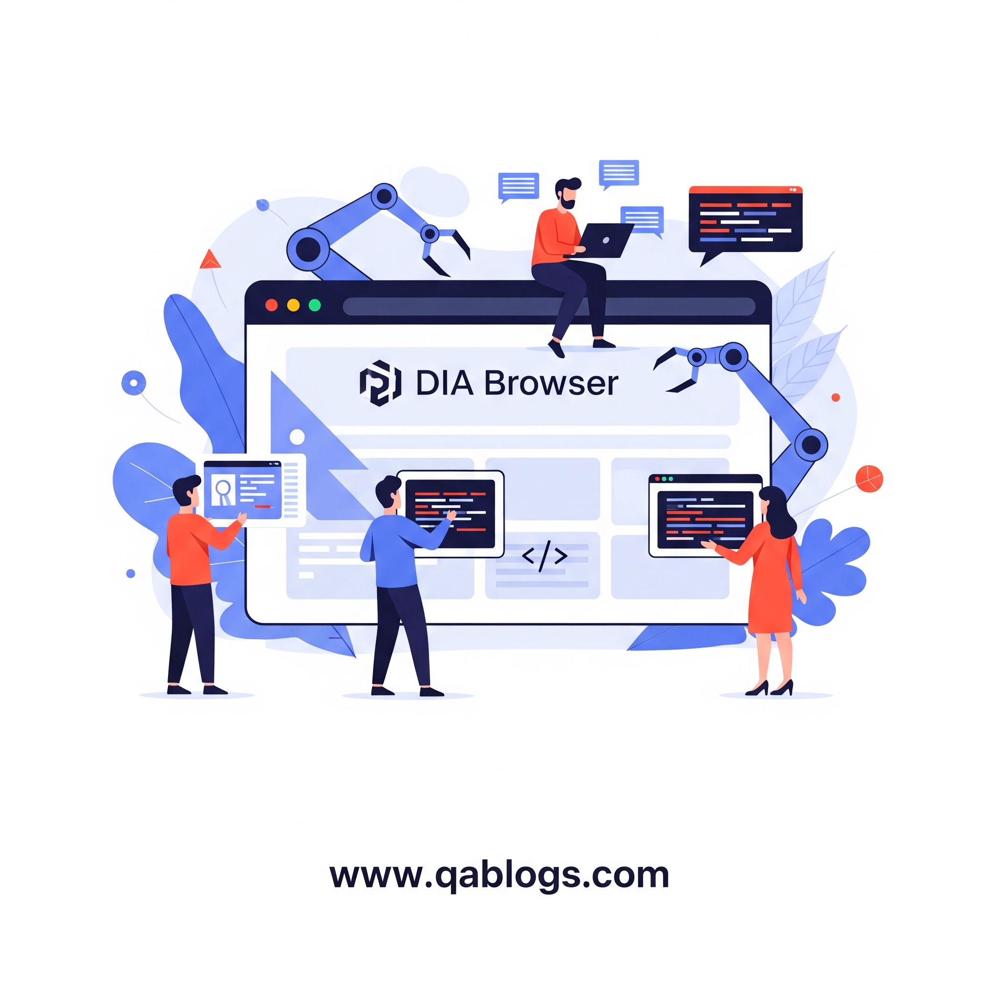

How DIA Browser Is Revolutionizing Web Automation for QA Engineers
Key Takeaways
- DIA Browser revolutionizes QA with AI-powered test generation and self-healing capabilities.
- It offers true cross-browser testing with 3,500+ browser-device combinations and a unified API.
- Low-code/no-code options make automation accessible to QA engineers of all skill levels.
- Seamless CI/CD integration and parallel execution reduce test time by up to 80%.
- Advanced visual and API testing capabilities ensure comprehensive test coverage.
In the fast-paced world of software development, web automation has become a cornerstone of quality assurance (QA), enabling teams to deliver high-quality applications at unprecedented speeds. However, traditional browser automation tools often struggle with modern web complexities, such as dynamic content, cross-browser compatibility, and flaky tests. Enter DIA Browser, an innovative solution that is redefining web automation for QA engineers in 2025. This blog post explores how DIA Browser is transforming QA processes, offering unparalleled efficiency, reliability, and adaptability for QA engineers, testers, developers, and tech professionals. Discover why DIA Browser is a game-changer in software testing and how it empowers QA teams to stay ahead in the evolving digital landscape.
The Evolution of Web Automation in Quality Assurance
Web automation testing involves using software tools to execute predefined scripts that simulate user interactions with web applications. Unlike manual testing, which is time-consuming and prone to human error, automation enhances efficiency, accuracy, and test coverage. According to a 2024 report, 78% of QA teams rely on automation to meet the demands of agile development cycles, yet challenges like test flakiness and complex setup persist.
DIA Browser, a next-generation automation platform, addresses these pain points by combining AI-driven intelligence, seamless cross-browser support, and a low-code interface. Designed for modern web applications, DIA Browser empowers QA engineers to streamline testing processes, reduce maintenance overhead, and achieve robust test coverage. Let's dive into how DIA Browser is revolutionizing web automation for QA professionals.
Key Features of DIA Browser for QA Engineers
1. AI-Powered Test Generation and Self-Healing
One of DIA Browser's standout features is its AI-driven test generation, which simplifies test creation for both technical and non-technical QA professionals. By analyzing application behavior, DIA Browser generates test scripts in natural language, reducing the need for extensive coding expertise. Additionally, its self-healing capabilities automatically adapt tests to UI changes, minimizing flaky tests—a common issue in traditional tools like Selenium.
Real-World Example: A fintech company using DIA Browser reduced test maintenance time by 65% after implementing self-healing tests, allowing QA engineers to focus on exploratory testing rather than debugging scripts.
Practical Takeaway: QA teams can leverage DIA Browser's AI to automate repetitive regression testing, freeing up time for strategic tasks like usability analysis.
2. True Cross-Browser and Cross-Platform Testing
Modern web applications must function seamlessly across browsers (Chrome, Firefox, Safari, Edge) and devices. DIA Browser's unified API supports true cross-browser testing, eliminating the need for multiple frameworks. Unlike Selenium, which requires complex configurations for cross-browser setups, DIA Browser offers out-of-the-box compatibility with over 3,500 browser-device combinations, similar to platforms like BrowserStack.
Stat: Cross-browser issues account for 22% of production bugs in 2025, underscoring the need for robust testing solutions like DIA Browser.
Analogy: Think of DIA Browser as a universal remote control for web testing, effortlessly managing diverse environments with a single interface.
3. Low-Code and No-Code Automation
DIA Browser democratizes web automation by offering low-code and no-code options, enabling QA engineers with varying skill levels to contribute to testing efforts. Its visual test builder allows testers to record user flows and convert them into reusable scripts, similar to tools like Ghost Inspector. This feature empowers non-technical team members, such as business analysts, to participate in QA processes.
Practical Takeaway: Adopt DIA Browser's no-code interface to onboard junior QA engineers quickly, accelerating team productivity.
4. Seamless CI/CD Integration
In 2025, continuous integration and continuous deployment (CI/CD) pipelines are standard for agile teams. DIA Browser integrates seamlessly with tools like Jenkins, GitLab, and Azure DevOps, enabling automated testing within CI/CD workflows. Its parallel execution feature runs multiple tests simultaneously, reducing test execution time by up to 80% compared to sequential testing.
Real-World Example: An e-commerce platform integrated DIA Browser into its GitLab pipeline, cutting release cycles from two weeks to three days while maintaining 90% test coverage.
5. Advanced Visual and API Testing
DIA Browser excels in both visual and API testing, critical for modern web applications. Its visual testing module, akin to Percy, captures screenshots and detects UI discrepancies across builds. For API testing, DIA Browser supports automated validation of endpoints, ensuring secure and reliable data exchanges.
Practical Takeaway: Use DIA Browser's visual testing to catch UI bugs early and its API testing to validate backend integrations, reducing production defects.
Comparing DIA Browser to Traditional Automation Tools
| Feature | DIA Browser | Selenium | Playwright |
|---|---|---|---|
| AI-Driven Testing | Yes (self-healing, natural language scripts) | No | Limited (auto-waits only) |
| Cross-Browser Support | 3,500+ browser-device combos, unified API | Requires complex setup | Supports major browsers, single API |
| Low-Code/No-Code | Yes, visual test builder | No, code-heavy | No, requires scripting |
| CI/CD Integration | Seamless with Jenkins, GitLab, Azure DevOps | Manual configuration needed | Good integration, but less intuitive |
| Test Maintenance | Low, self-healing scripts | High, prone to flakiness | Moderate, resilient automation |
| Visual Testing | Built-in, screenshot comparison | Requires third-party tools | Limited, needs external integration |
Analysis: DIA Browser outshines traditional tools like Selenium and Playwright in ease of use, AI capabilities, and low-code accessibility. While Playwright offers robust cross-browser testing, DIA Browser's no-code options and self-healing scripts make it ideal for diverse QA teams. Selenium, though widely used, struggles with maintenance and setup complexity, making DIA Browser a more future-proof choice.
Challenges in Adopting DIA Browser
Despite its advantages, adopting DIA Browser comes with challenges:
- Learning Curve: While no-code options are beginner-friendly, mastering AI-driven features requires training, especially for teams new to automation.
- Cost: DIA Browser's pricing may be higher than open-source tools like Selenium, though its ROI in reduced maintenance and faster releases justifies the investment.
- Integration with Legacy Systems: Teams using older frameworks may face compatibility issues, requiring gradual migration strategies.
Solutions:
- Invest in DIA Browser's training resources or online courses to upskill teams.
- Start with a pilot project to evaluate ROI before full adoption.
- Use DIA Browser's API to bridge legacy systems during transition.
Trends Shaping Web Automation in 2025
DIA Browser aligns with key trends transforming QA automation:
- Agentic AI: Tools like DIA Browser leverage autonomous AI to reduce manual intervention, similar to AskUI's visual UI testing.
- Hyper-Automation: Combining AI, low-code, and CI/CD integration, DIA Browser supports end-to-end automation, mirroring ACCELQ's approach.
- Shift-Left Testing: By enabling early testing in development, DIA Browser supports "secure by design" principles, reducing defect costs.
- Cloud-Based Testing: DIA Browser's cloud infrastructure ensures scalability, akin to BrowserStack's real-device testing.
Practical Insights for QA Professionals
- Start with a Pilot Project: Test DIA Browser on a small web application to assess its fit for your team's needs. Focus on regression or cross-browser testing to measure efficiency gains.
- Upskill in AI-Driven Testing: Enroll in courses on platforms like Udemy to learn AI-based testing frameworks, enhancing your ability to leverage DIA Browser's features.
- Collaborate Across Teams: Involve developers and business analysts in DIA Browser's no-code testing to foster a culture of shared QA responsibility.
- Optimize CI/CD Pipelines: Integrate DIA Browser into your CI/CD workflow to automate testing at every commit, ensuring continuous quality.
- Monitor Test Analytics: Use DIA Browser's real-time reporting to identify flaky tests and optimize test suites, improving coverage and reliability.
Conclusion
DIA Browser is revolutionizing web automation by addressing the limitations of traditional tools and aligning with 2025's QA trends. Its AI-driven test generation, cross-browser support, and low-code interface empower QA engineers to deliver high-quality software faster and more efficiently. As web applications grow in complexity, tools like DIA Browser are essential for staying competitive in the digital landscape.
Ready to transform your QA process? Explore DIA Browser's free trial to experience its capabilities firsthand. Share your automation challenges in the comments below, or contact QA Blogs for tailored advice on adopting DIA Browser. Let's redefine quality assurance together in 2025!
Join Our Community of QA Professionals
Get exclusive access to in-depth articles, testing strategies, and industry insights. Stay ahead of the curve with our expert-curated content delivered straight to your inbox.

Nikunj Mistri
Founder, QA Blogs
About the Author